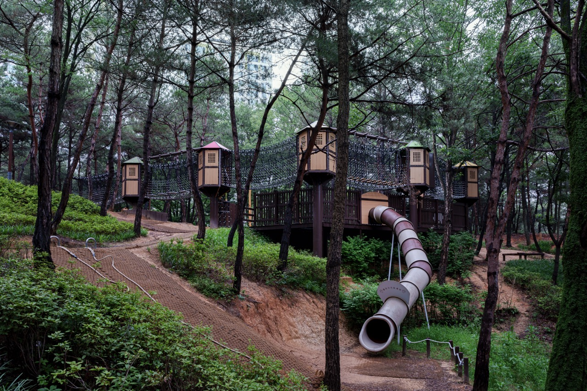
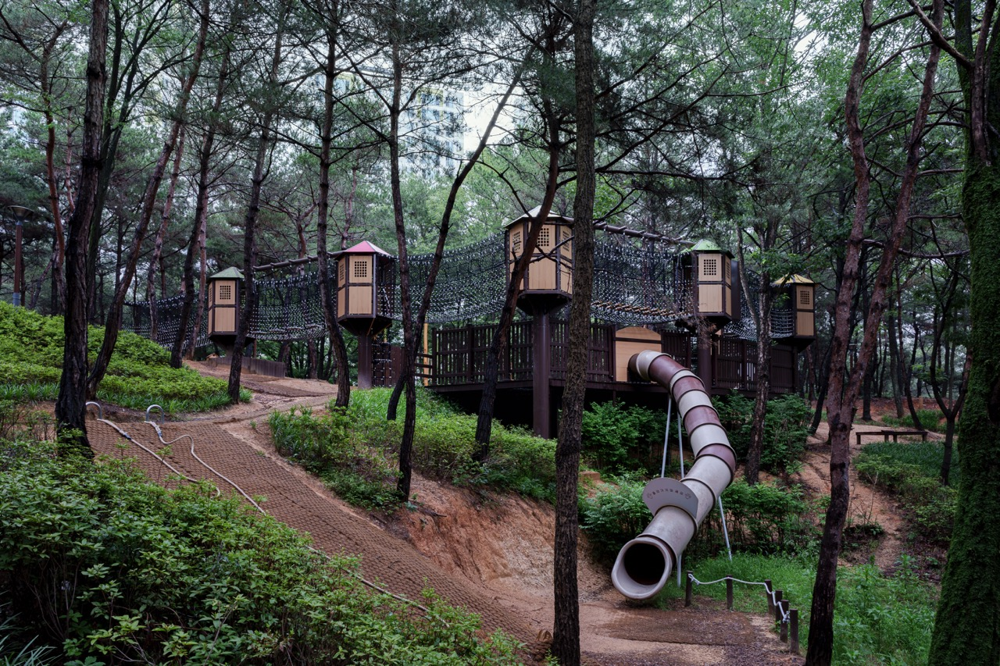

공원 놀이터, 2023
<공원 놀이터> 시리즈는 아이들이 혼자 갈 수 없는 공원에 있는 놀이터를 촬영한 작업으로 공원의 놀이터가 가지고 있는 사회적 기능을 찾아보는 작업이다.
놀이터는 어린이들이 신체적, 정서적, 사회적 경험이 이루어지는 공간이다.
같은 또래를 만나 놀이터에 설치된 기구를 이용하며 노는 공간인 놀이터는 사회적 인간이 되는 첫 발판이 되어주는 역할을 한다.
하지만 주거지에서 멀리 떨어진 임진각을 방문했을 때, 공원에 설치된 놀이터를 보며 처음 든 생각은 ‘이곳에 아이들은 어떻게 오지?’였다. 판문점 입구가 있는 이 먼 곳에, 군부대와 철조망, 초소가 보이는 이곳에 알록달록한 놀이터는 낯설어 보였다.
이러한 생각을 가지고 전국에 있는 공원 놀이터를 찾아 방문해 보았다.
집에서 먼 공원에 있는 놀이터에서 아이들은 주로 부모의 입회화에 홀로 노는 경우가 많았다. 그리고 또래 친구를 만나더라도 집에 가야할 시간이 되면 각자가 사는 곳이 멀기에 다음에 또 보자는 약속을 하지 못하고 헤어질 수밖에 없어 보였다.
이러한 공원의 놀이터는 아이들에게 있어 상실이라는 경험을 처음 겪게 만드는 장소가 아닐까 라는 생각이 들었다.
아이들에게 상실감이라는 낯선 경험을 하게 만드는 공원 놀이터는 희망적이고 따뜻한 공간이기보다는 차갑고 무뚝뚝한 공간으로 느껴졌다.
한편으로는 언젠가는 겪게 될 상실을 미리 연습하는 장소처럼 보이기도 한다.
이러한 일련의 생각이 이루어지며 이를 사진으로 담아보고자 새벽이나 흐린 날 아무도 없는 놀이터를 방문하여 촬영해 보았다.


 
